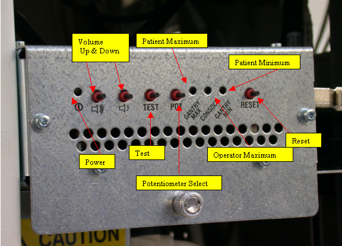
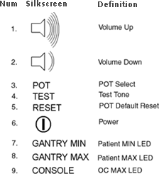
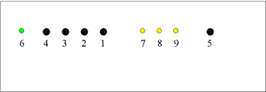

Operating Documentation
Direction 5193855-800, Rev# 4
LS 5.X RT Ltd. Access Service Information Adv
Operating Documentation |
| Last Revised: | 23 August, 2005 |
The information in this module applies to the following Operator Consoles:
|
This module contains the following sections:
Section 1 - Overview
Section 2 - Intercom Board Adjustments
Section 3 - Intercom Functional Block Diagram
Section 4 - Prescribed Tilt / Reset Circuit Operation
Section 5 - NGPDU I/F
The Intercom block enables communication between the console operator and the patient on the table. The communication direction through the Intercom can be switched by depressing the TALK button on the SCIM keyboard. The operator can speak to the patient by depressing the TALK button (ON). When the TALK button is released (OFF) the operator can then listen to the patient.
When Auto-voice is playing, the operator can listen through the Console speaker on the Auto-voice R channel while the TALK button is released (OFF). At the same time the patient can listen through the Table speaker on the Auto-voice L channel.
If the operator depresses the TALK button (ON) while Auto-voice is playing, the Intercom will disable the Auto-voice sound and will switch the sound source to the Console microphone output. The Console microphone output is amplified and routed to the Host computer's audio input for the Auto-voice recording. The Auto voice recording will be managed by the host computer's software. It will be up to the software to start and stop recording the sound.
The GOC 4 console intercom board has been completely redesigned from the GRE console. It is no longer located in the SDDA. It also has new potentiometer adjustment controls. See figure below.
Illustration 1: Intercom Board Adjustments

Volume Adjust
Press the Up and Down controls to adjust the selected volume.
Test Button
Press the Test button to play a test tone.
Potentiometer Select
Tap to cycle through the volume control potentiometers, Patient Minimum, Operator Maximum, and Patient Maximum.
Patient Maximum
This is the maximum volume that the patient will here in the room from the operator or from Auto Voice. Select this POT to control the volume to a level that is the quietest/lowest volume the patient can receive.
Operator Maximum
This is the maximum volume that the operator will here from the patient or from Auto Voice. Select this POT to control the volume to a level that is the loudest/highest volume the operator can receive.
Patient Minimum
This is the minimum volume that the patient will here in the room from the operator or from Auto Voice. Select this POT to control the volume to a level that is the quietest/lowest volume the patient can receive.
Reset
Resets the volume to the factory presets.
The Silkscreen symbols are as follows:
Illustration 2: Silkscreen Symbols

Front panel symbols (see Illustration 3 for corresponding symbol locations on front panel).
Illustration 3: Front panel buttons and indicator LEDs Location

The above figure shows the Front panel buttons and indicator LEDs with corresponding symbols (see Illustration 2).
| Button Label | Full Name | Description |
| VOLUME UP | Volume Up | increase the volume of the channel controlled by 'SELECT' |
| VOLUME DN | Volume Down | decrease the volume of the channel controlled by 'SELECT' |
| TONE | Tone Generator | tone generator on/off switch (not operational for AutoVoice) |
| SELECT | POT Select | button that selects which POT to adjust |
| DEFAULT | Default Reset | reset the POTs to the factory default setting |
To adjust digital potentiometers:
Push ‘SELECT’ once to choose the patient minimum POT (the ‘PATIENT MIN’ led should illuminate). Push ‘SELECT’ again to choose the console speaker POT (the ‘GANTRY SPK’ led should illuminate). Push ‘SELECT’ again to choose the remote speaker POT (the ‘CONSOLE SPK’ led should illuminate). Pushing ‘SELECT’ a fourth time will deselect all POTs and turn off all leds.
Push ‘TONE’ to generate a test tone through the selected POT channel.
Adjust the volume louder by pushing the ‘VOLUME UP’ button, and adjust the volume softer by pushing the ‘VOLUME DN’ button.
Push the ‘DEFAULT’ button to reset the POTs to their factory default setting.
Illustration 4: Intercom Functional Block Diagram

The Prescribed Tilt circuit block will detect the status of the TILT push button in the SCIM keyboard as it is pressed or released (NO - Normal Open; NC - Normal Closed respectively) by the use of two independent paths. An invert logic signal condition (XOR) in between these two paths is used to determine the tilt condition. The pulse width of both signals shall be the same when the push button is pressed. Once the signals are received, the dual signal (redundant path) will be transmitted to the ETC or MTCB board so than a single point of failure will not cause tilt motion.
The Prescribed Tilt circuit performance requirements are specified in the following:
One push button switch double-pole double-throw. The button has six contacts. Contacts 1-3 are used for primary (Hardware) path. Contacts 4-6 are used for secondary (Firmware). See Illustration 5.
The Prescribed Tilt block detects the condition of the DPDT button in the SCIM keyboard (either press or release) by using two independent paths. These two paths have an inverse logic condition between them and both signals must remain constant for the same period of time while the button is pressed.
No single wire can cause Tilt motion. If one of two wires fails, the circuit will not cause tilt.
The circuit receives dual signals and generates two independent differential signals that are sent to the TGP/ETC board. The output remains active as long as the button is pressed.
The defined Voltage level of the Prescribed Tilt signal is no greater than 5V.
Illustration 5: Prescribed Tilt Requirements

The Reset block will receive and detect the serial break command from the Host computer serial port expander (RS-232), and then generate another pulse, which will be sent to the STC or MTCB board in the Gantry. Its performance requirements are illustrated below:
The Serial port expander interface sends a minimum RS-232 serial break command of 4mA and 8.1V in order to generate the Gantry Reset signal.
The Gantry Reset circuit responds to any pulse with a width longer than 200ms and will not respond to any pulse with a width less than 150ms.
Once the serial break command has been detected the output of the Gantry Reset circuit will be differential, an active high pulse signal, from 0VDC to +5VDC, with a width no less than 100ms.
There are four LEDs and 5 test points on the board to detect the errors in the events of Gantry Tilt and Reset failures.
| LED indicators | Color | Description |
| Tilt_1 (First Path), DS7: | YELLOW | Lit when the path1 output pulse is sent to the ETC or MTCB board. |
| Tilt_2 (Second Path), DS8: | YELLOW | Lit when the path2 output pulse is sent to the ETC or MTCB board. |
| GR_IN (Input Detection), DS5: | YELLOW | Lit when any active high input pulse-signal. |
| GR_OUT (Gantry_Reset pulse), DS6: | YELLOW | Lit when the reset output pulse is sent to the STC or MTCB board. |
| Test Points | |
| TP5 (Prescribed_Tilt Circuit): | Output Second path pulse-width signal |
| TP6 (Prescribed_Tilt Circuit): | Output first path pulse-width signal |
| TP10 (Gantry_Reset Circuit): | Input pulse-width signal |
| TP8 (Gantry_Reset Circuit): | Output pulse-width signal |
| TP4 (Entire Board Design): | Digital Ground |
| TP9 (Gantry_Reset Circuit): | Falling-edge signal detection |
In the Prescribed tilt circuit the LED Tilt_1 and Tilt-2 will always be either both ON (when the tilt button is pushed and hold) or both OFF (when the button is released). In any other cases, it means that one of the two paths is not working properly. Refer to Table 1 for more details.
In the Prescribed Tilt circuit the test points TP12 and TP13 are provided to measure a pulse signal (active high). This pulse signal must be present only when the button in the SCIM keyboard is pressed, and in both test points the width of the pulse should be the same.
Table 1: Gantry Tilt LED Status
| Tilt Button | LED Tilt 1 | LED Tilt 2 | Error Detection |
| Pushed | OFF | OFF | Both paths are not working properly |
| Pushed | OFF | ON | Path 1 is not working properly |
| Pushed | ON | OFF | Path 2 is not working properly |
| Pushed | ON | ON | Both paths are working properly |
| Released | OFF | OFF | Both paths are working properly |
| Released | OFF | ON | Path 2 is not working properly |
| Released | ON | OFF | Path 1 is not working properly |
| Released | ON | ON | Both paths are working properly |
In the Gantry Reset circuit, the LED GR_IN is lit for the same amount of time as the input pulse width. This LED detects if there is any known missing input signal or malfunction of the opto-isolator. In addition, the test point TP9 is used to measure the RS-232 (serial break command) pulse-width of the input signal.
In the Gantry Reset circuit, if the input pulse width is greater than 200ms, an active low edge will be detected on TP8. If the input width is less than 150ms, TP8 will remain active High.
In the Gantry Rest circuit, the LED GR_OUT is lit for approximately 150ms when a Gantry_Reset signal is sent out. The test point TP10 measures output reset signals with a pulse width less than 100ms.
The NGPDU I/F block has a mechanical relay circuit, which supports the PDU_24 and SYSLITE signals coming from the Gantry.
NGPDU I/F Circuit Operation:
The NGPDU I/F circuit block shall handle the following signals:
PDU_24 +24Vdc input from the Gantry (M sub).
SYSLITE +24Vdc output to the Gantry (M sub).
These signals will be connected to their respective terminals on the mechanical relay. The mechanical relay will always be ON during power-on of the ICOM board for HPower.
The NGPDU circuitry is not used for H16 or older systems.